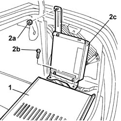
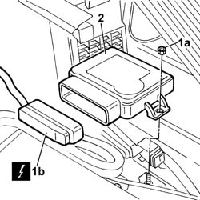

3380A64 Electrically operated parking brake electronic control unit - R.R.
- Path
- Procedures > 33 BRAKES > 3380 HANDBRAKE > 3380A HANDBRAKE CONTROL AND LINKAGE > 3380A64 Electrically operated parking brake electronic control unit - R.R.
- Kind
- repair procedure (removal / refitting; the operation number is the code)
- Applies to
- all engines; all production periods
- Interactive page
- https://sloeber94.github.io/elrnDB-lThss/en/#/216039
Applies to: all engines; all production periods
 Removing
Removing
 Refitting
Refitting- Disconnect the negative battery terminal.
1. Lower the right luggage compartment cover flap.
2. Undo the nut (2a) and the bolts (2b) and place the TV tuner control unit (2c) to the side.

Applies to: all engines; all production periods
1. Undo the fixing nuts (1a) and disconnect the electrical connector (2b).
 | Description | Connector |
|---|---|---|
1b | Electric brake control unit | M059 |
2. Remove the electric brake control unit

Applies to: all engines; all production periods
Refitting
Removing- Connect the electrical connector for the electric brake control unit and fit it in place.
| Description | Connector |
|---|---|---|
. | Electric brake control unit | M059 |
- Tighten the nuts fixing the electric brake control unit.
- Reposition the TV tuner and tighten it using the nut and the bolts.
- Close the right luggage compartment cover flap.
- Connect the negative battery terminal.